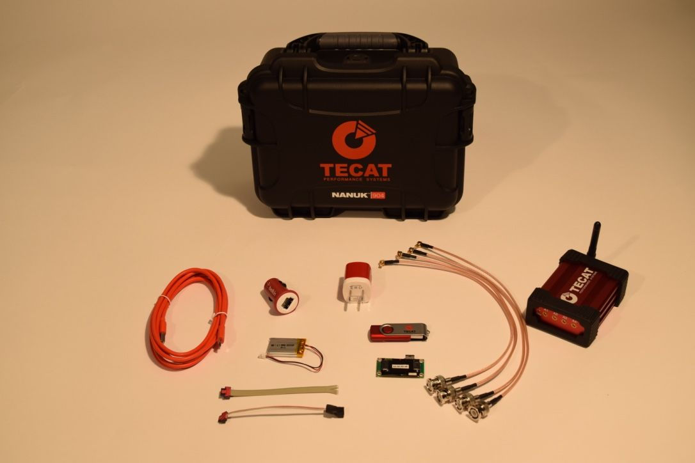
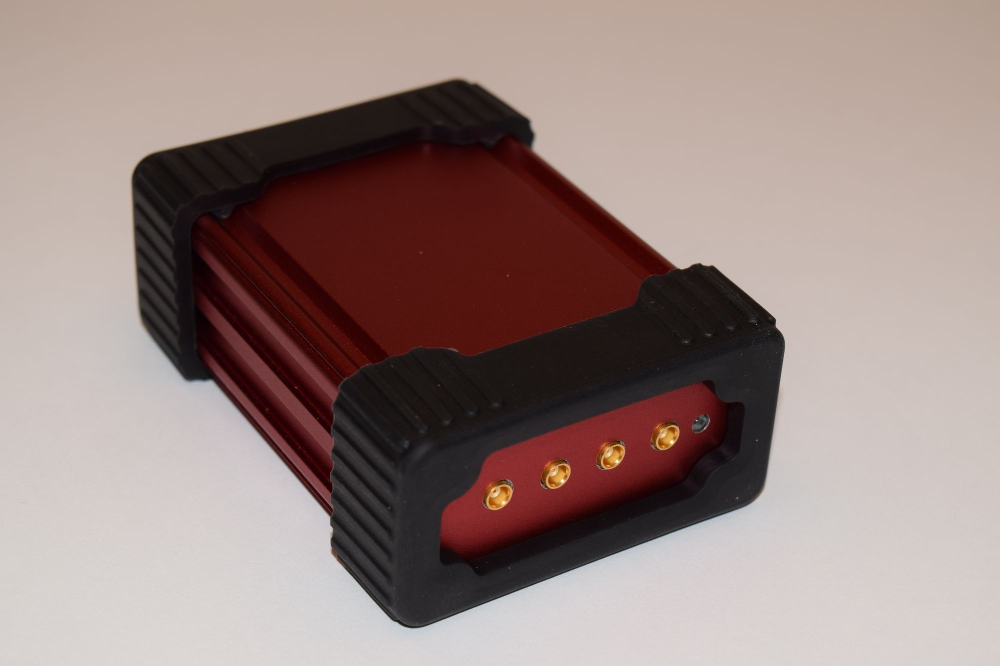
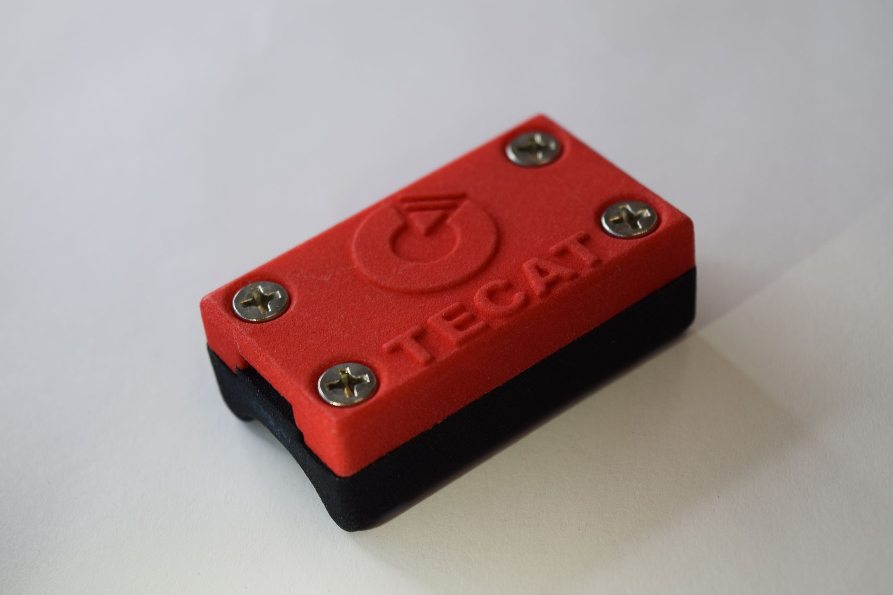

Wireless single-channel strain system
TECAT 468 Single Channel
Single-channel wireless strain system for torque on shafts, flexplates, and driveline parts.
- sampling versions
- 4, 6, or 8 kHz
- A/D converter
- 16-bit
- remote unit, no battery
- 6.5 g
- analog outputs
- 4



Configurations
| Sampling rate |
|
|---|---|
| Resolution |
|
| Base unit |
|
VERIFY The TECAT 468 lineup is still being finalized: version names and whether the entry-level version is offered.
Overview
The TECAT 468 Single Channel reads one strain gage bridge on a rotating or moving part and sends the data by radio to a base unit at your PC. It comes in 4,000, 6,000, and 8,000 Hz sampling versions. Its 16-bit A/D converter means you no longer send your strain range with the order so a gain resistor can be fitted before shipping. The remote transceiver weighs 6.5 g without its battery, and the base unit's four analog outputs feed your DAQ directly.
What it measures
- Strain from one full-bridge strain gage input (torque, tension, compression)
- 3-axis acceleration, optional, ±16 g or ±400 g
Features
- The 16-bit A/D converter covers the strain range without a factory gain setting, so you don't have to supply your strain range when you order. The earlier 12-bit design needed it to fit the right gain resistor before shipping.
- The remote transceiver board measures 45 mm × 23 mm × 6 mm with mounting tabs and runs on a 3.7 V Li-Poly cell.
- The base unit plugs into a PC USB port and carries the antenna, the transceiver, and four programmable 0 V to 5 V analog outputs for your DAQ.
- Two independent shunt calibration legs, signal + and signal − to ground through 100 kΩ, let you check calibration in the field.
- On-board data logging records events without a PC or DAQ connection.
- Remote flash updates the firmware without removing the remote unit from the part under test.
- Optional shaft enclosures protect the remote unit and battery from debris. The inductive charging version recharges the battery without exposing the USB port.
- The system installs without altering the part under test and can be removed.
- The kit ships in a carrying case with remote and base transceivers, antenna, battery, power adapters, cables, and TECAT Data Viewer software.
Specifications
VERIFY Values below come from the current single-channel hardware, except the A/D converter. Engineering to confirm sensitivity and input range for the 16-bit TECAT 468.
| Remote unit | |
|---|---|
| Sensor input | Full Wheatstone bridge, 350 Ω strain gage or higher |
| External channels | 1 |
| Maximum sampling rate | 4,000, 6,000, or 8,000 Hz, by version |
| Measurement sensitivity | ±0.1% FSR (digital output) |
| A/D converter | 16 bit (high-resolution versions); 12 bit (entry-level version, if offered) |
| Bridge excitation | 2.048 V DC at 10 mA maximum, pulsed to the sensor |
| Differential input range | High resolution: no factory setting needed. Entry level: factory set from your strain range (0 mV to 5 mV, 0 mV to 10 mV, or 0 mV to 20 mV) |
| Analog gain | User selectable: 1×, 2×, 10×, 200× |
| Digital gain | User selectable: 1×, 2×, 4×, 8×, 16× |
| Digital offset | User selectable: ±100% full scale |
| Oversampling | 1×, 2×, 4×, 8×, 16×, 32× |
| Shunt calibration | 2 independent legs: signal + to ground and signal − to ground, each through 100 kΩ |
| Accelerometer | Optional 3-axis: ±16 g or ±400 g |
| Power supply | 3 V DC to 6 V DC, 6 V DC absolute maximum |
| Sensor driver current | 10 mA absolute maximum |
| Battery | 3.7 V single-cell Li-Poly: 400 mAh standard; 850 mAh or 1,000 mAh optional |
| Current draw | 3.8 mA at 1 kHz active with a 350 Ω gage; 25 µA inactive; varies with oversampling |
| Battery life, field example | Over 200 hours of 2 kHz data on a 1,000 mAh battery (driveshaft test) |
| Dimensions | 36 mm × 23 mm × 4 mm board without tabs and connectors; 45 mm × 23 mm × 6 mm with mounting tabs |
| Mass | 6.5 g transceiver with epoxy coating; 9.0 g for the 400 mAh battery |
| Operating temperature | −40 °C to +120 °C |
| Radio link | |
| Carrier | 2.45 GHz direct sequence spread spectrum, 2.405 GHz to 2.480 GHz, license free worldwide |
| RF channels | 16 |
| Packet standard | IEEE 802.15.4 capable, open communication architecture |
| Range | 30 m (100 ft) line of sight |
| Base unit | |
| Host connection | USB, mounts as a COM port; up to 230,400 baud, 8 data bits, no parity, 1 stop bit |
| Analog outputs | 4 programmable channels, 0 V to 5 V (2.5 V nominal center) |
| Power supply | 5 V DC to 24 V DC unregulated, or USB |
| Software | |
| Software | TECAT Data Viewer, or user supplied |
| Functions | Configuration, calibration, live monitoring, data logging |
| Firmware updates | Remote flash, without removing the remote unit from the unit under test |
| Shaft enclosures (optional) | |
| Material | PA 2200 plastic |
| Operating temperature | −40 °C to +80 °C |
| Maximum speed, 19 mm to 28.5 mm shaft | Standard: 15,000 rpm with 2 hose clamps, 12,000 rpm with 1. Inductive charging: 11,250 rpm with 2, 9,000 rpm with 1 |
| Maximum speed, 28.5 mm to 60.3 mm shaft | Standard: 10,000 rpm with 2 hose clamps, 8,000 rpm with 1. Inductive charging: 7,500 rpm with 2, 6,000 rpm with 1 |
| Shafts over 60.3 mm | Limit set by centrifugal force on a 27 g mass at the shaft surface; see the brochure |
| Sealing | Not watertight |
How the system works
-
Remote unit
Mounts on the moving part. Holds the capture electronics, Micro-Measurements strain gages or thermocouples, the radio, and a long-life battery.
-
Base unit
Plugs into your PC by USB. Holds the antenna and receiver, with analog outputs that feed your data acquisition system.
-
TECAT Data Viewer
Software on the PC for setup, calibration, live monitoring, and recording.
Downloads
-
Remote Enclosures Data Sheet
One-page data sheet for the TECAT remote enclosures, listing shaft diameter ranges, heights, operating temperature, and maximum RPM by mounting method. Published under the earlier WISER name.
Ready to measure?
Tell us about the part and what you need to measure, and we'll follow up with a recommendation and a quote.